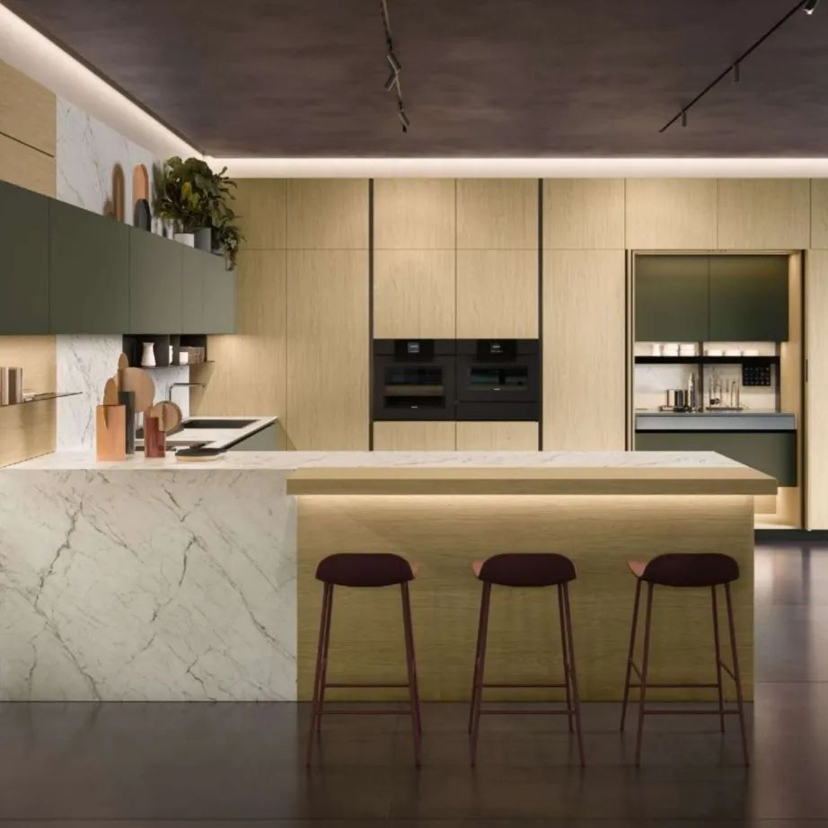

Mes réalisations :
Cette semaine, c'est au sein d'une maison récente à Replonges que l'on découvre une cuisine alliant modernité au charme de l'ancien.
Les façades en finition Noyer Canaletto sont mises en lumière par un ensemble de plans de travail en stratifié ardoisé blanc roche.
Les pièces décoratives chinées par l'hôte de cette maison (dont les suspensions au-dessus de l'ilôt), mariées aux lignes contemporaines et droites des meubles, confèrent un style unique à cette cuisine.
Merci de m'avoir accordé votre confiance 🙂 !
Hâte de faire découvrir les aménagements complémentaires de cette maison...
Réalisation au sein d'une charmante bâtisse située aux alentours de Mâcon. L'élégance des façades Noyer Canaletto se mêle à la sobriété du Granit noir Zimbabwé finition cuir.
Cette cuisine s'impose par ses lignes épurées et soignées.
Merci pour votre confiance 🙂.
Ce fut une belle rencontre, et un immense plaisir de collaborer avec vous sur ce très beau projet.
Cuisine ARMONY alliant des matériaux en lien avec la nature : avec ses portes laquées Verde Foresta et ses panneaux Rovere Oslo, nous voilà plongés dans l'univers design et raffiné du fabricant italien.
